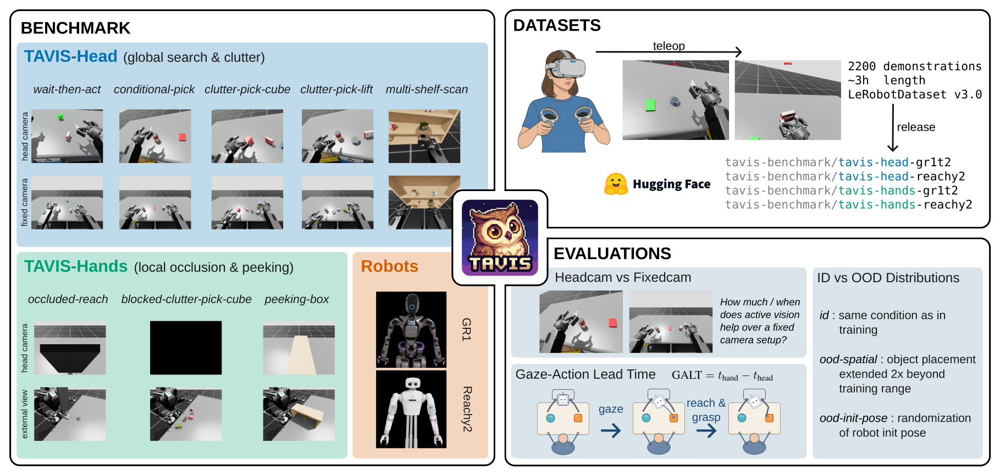
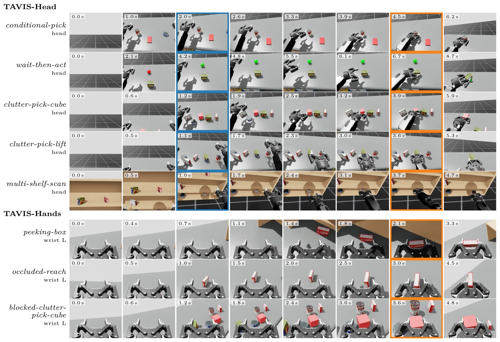

TAVISA Benchmark for Egocentric Active Vision and Anticipatory Gaze in Imitation Learning
Department of Intelligent Systems, Tilburg University

Abstract
Active vision – where a policy controls its own gaze during manipulation – has emerged as a key capability for imitation learning, with multiple independent systems demonstrating its benefits in the past year. Yet there is no shared benchmark to compare approaches or quantify what active vision contributes, on which task types, and under what conditions. We introduce TAVIS, evaluation infrastructure for active-vision imitation learning, with two complementary task suites – TAVIS-Head (5 tasks, global search via pan/tilt necks) and TAVIS-Hands (3 tasks, local occlusion via wrist cameras) – on two humanoid torso embodiments (GR1T2, Reachy2), built on IsaacLab. TAVIS provides three evaluation primitives: a paired headcam-vs-fixedcam protocol on identical demonstrations; GALT (Gaze-Action Lead Time), a novel metric grounded in cognitive science and HRI that quantifies anticipatory gaze in learned policies; and procedural ID/OOD splits. Baseline experiments with Diffusion Policy and π0 reveal that (i) active vision generally helps, consistently across training runs, but benefits are task-conditional rather than uniform; (ii) multi-task policies degrade sharply under controlled distribution shifts on both suites; and (iii) imitation alone yields anticipatory gaze that lands on the task-relevant object, with lead times comparable to those of the human demonstrations, although head motion is less smooth than in the demonstrations, an effect of action chunking that success rate does not reveal.
Videos
Rollouts of the multi-task π0 policy with a head camera on GR1T2, shown at half speed: a third-person view (left) next to the robot's own head camera (right). The captions mark the head fixation and the grasp as the GALT detector finds them: the head settles on the target well before the hand gets there.
More videos → first-person demonstrations for all eight tasks and both robots.
Tasks
TAVIS has two suites on two humanoid torsos (Fourier GR1T2 and Pollen Robotics Reachy2), with about 2,200 teleoperated demonstrations in LeRobot v3.0 format. Every demonstration records the head camera, a fixed workspace camera and both wrist cameras at the same time, so policies can be trained on the same demonstrations with or without control of their own viewpoint. Each task isolates one function of active vision:
TAVIS-Head · head camera on a pan/tilt neck
- conditional-pick · conditional information gathering
- wait-then-act · temporal monitoring
- clutter-pick-cube · clutter disambiguation, target defined by appearance
- clutter-pick-lift · clutter disambiguation, target defined by language
- multi-shelf-scan · vertical workspace search
TAVIS-Hands · wrist cameras, head view occluded
- peeking-box · looking into a container
- occluded-reach · reaching around an occluder
- blocked-clutter-pick-cube · wrist-only search

Citation
@article{spigler2026tavis,
title={TAVIS: A Benchmark for Egocentric Active Vision and Anticipatory Gaze in Imitation Learning},
author={Spigler, Giacomo},
journal={arXiv preprint arXiv:2605.07943},
year={2026}
}